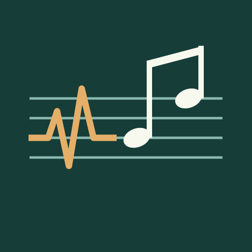

НОТОГРАФ 01 / TRANSCRIPTIONИз звука —
в ноты.
Напой мелодию или добавь запись. Сверь результат на слух, исправь и сохрани партитуру.
Запись не выбрана
Для напева и одиночного инструмента. Размер 4/4, темп можно изменить.
Аудио остаётся на устройстве.
02 / ПАРТИТУРА
0:00
Нажми на ноту, чтобы исправить высоту или удалить её. Янтарные ноты — менее уверенное распознавание.
Ноты сохраняются локально. Исходная запись после перезагрузки не сохраняется. MIDI — для DAW и совместимого Sound Forge.